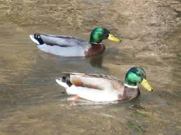
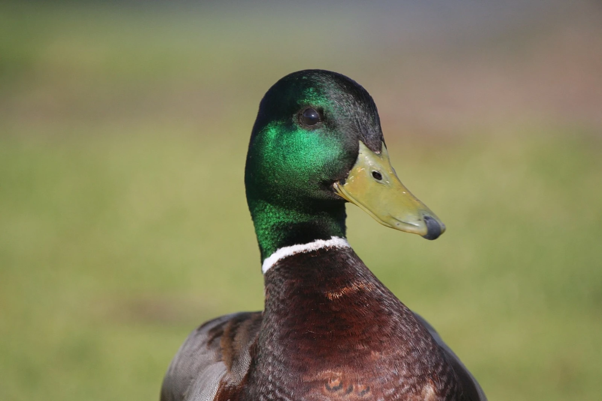
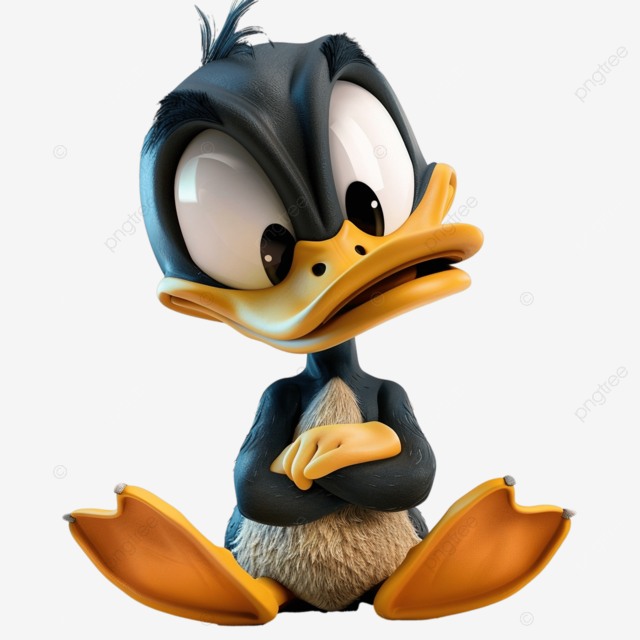
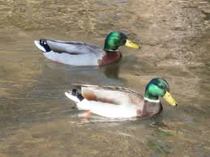
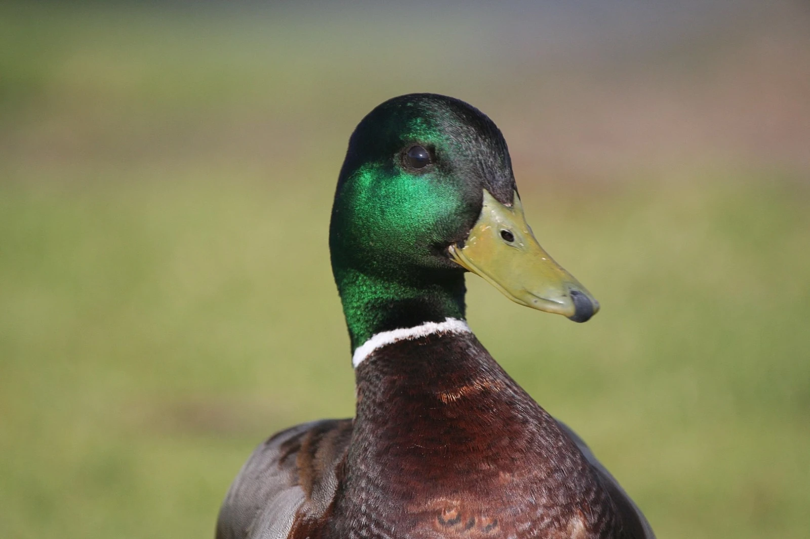
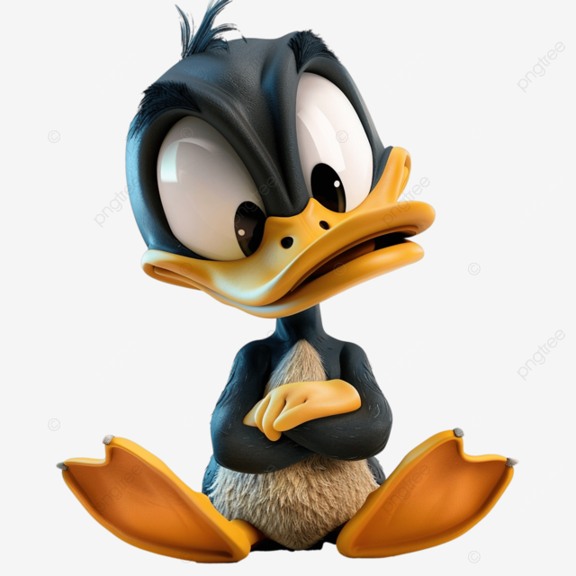
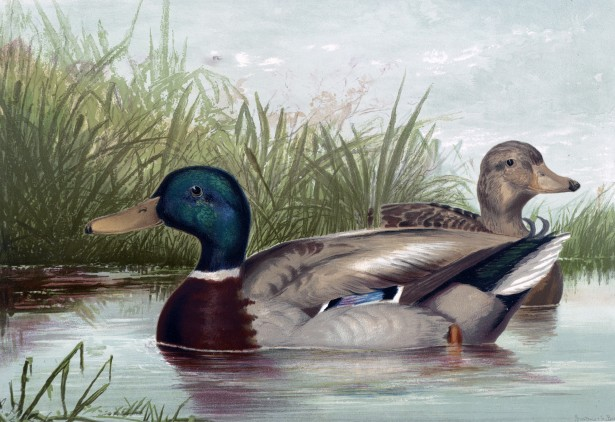
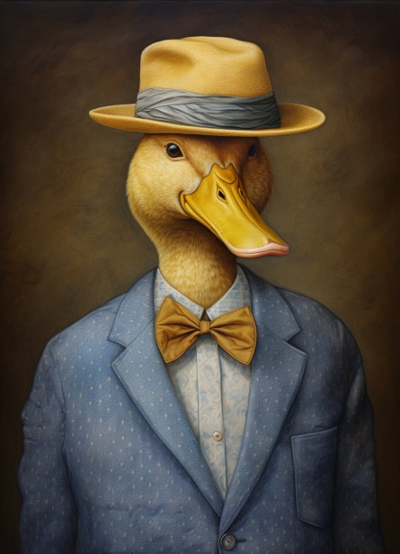
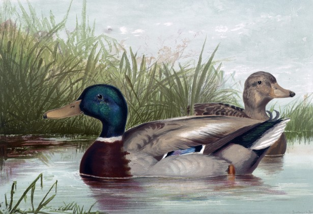
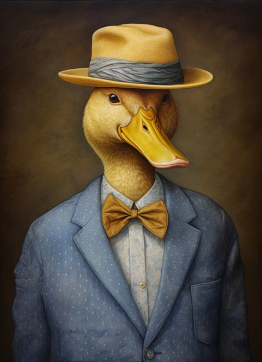

Bem-vindo ao Patos.com — o Universo Definitivo dos Patos!
e você é apaixonado por patos, curioso sobre essas criaturinhas carismáticas ou simplesmente quer dar
boas risadas, este é o seu lugar! Aqui você encontra tudo sobre patos: dos fofinhos amarelos aos
selvagens mais realistas. Explore fotos, curiosidades, espécies, comportamentos e até memes que só quem
patos vai entender.
venha dispertar suas curiosidades querido úsuario,venha para esse mundo curioso sobre nossos queridos
patos!!
 





 


